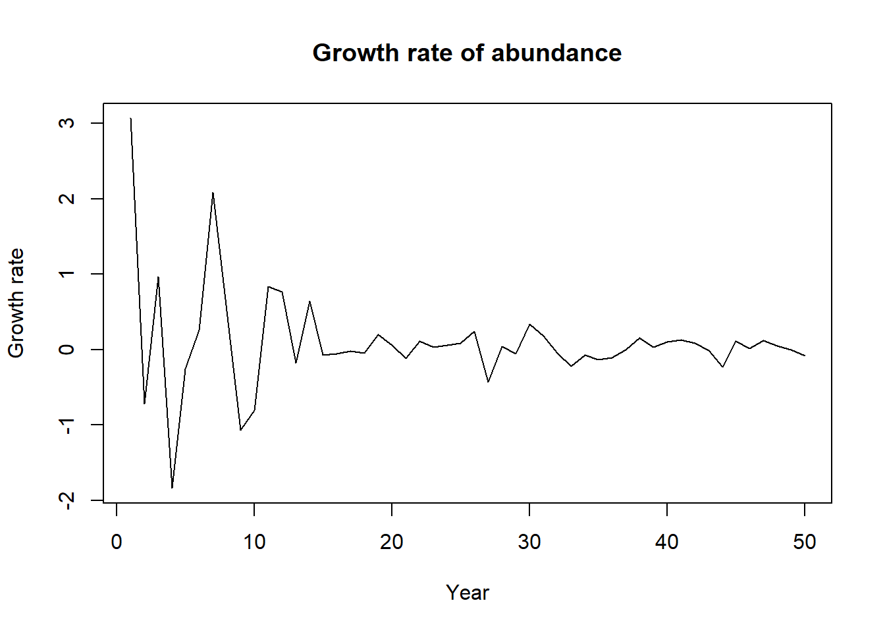

wildtype<- c(103,1125,504,608,794,698,920,535,842,765,945,1005,724,498,727)
print(wildtype) [1] 103 1125 504 608 794 698 920 535 842 765 945 1005 724 498 727Hafez Ahmad
October 16, 2022
You will find basic R codes
[1] 103 1125 504 608 794 698 920 535 842 765 945 1005 724 498 727#2. Create variable called “resistant”—-
resistant<- c(768, 230, 854 ,637,426, 482, 1118, 524, 604 ,730 ,17 ,421, 587, 782 ,171)
print(resistant) [1] 768 230 854 637 426 482 1118 524 604 730 17 421 587 782 171#3. combine the the vectors into data frame called “miner”—-
wild resist
1 103 768
2 1125 230
3 504 854
4 608 637
5 794 426
6 698 482
7 920 1118
8 535 524
9 842 604
10 765 730
11 945 17
12 1005 421
13 724 587
14 498 782
15 727 171#4. Calculate the mean and variance of the wildtype and resistant from the data frame “miner”—-
print(paste0("The mean of wildtype is ",round(x=mean(miner$wild),digits=3)," and the variance is ",round(x=var(miner$wild),digits=3)))[1] "The mean of wildtype is 719.533 and the variance is 63014.552"print(paste0("The mean of resistant is ",round(x=mean(miner$resist),digits=3)," and the variance is ",round(x=var(miner$resist),digits=3)))[1] "The mean of resistant is 556.733 and the variance is 80529.21"formula for standard error is standard deviation/square root ($ {(n)}$) of sample size
#…apply the function to the data frame “miner”—-
[1] "The standard error of wildtype is 64.815"[1] "The standard error of resistant is 73.271"#6. write a function for growth rate called “rate” —-
where, nt is the vector abunace at t,ntplus the vector of abunance at year t+1 and t for vector of years and return plot for growth rate … load data from laptop
abundance <- read.csv("E:/1 Master's/MSU/course classes/Fall 2022/WFA 8134 RMethod/code/abundance.csv",header = TRUE)
head(abundance) year abundance nextabundance
1 1 10 215
2 2 215 105
3 3 105 277
4 4 277 44
5 5 44 34
6 6 34 44#… write that functions
rate<- function(dataframe){
nt<- dataframe$abundance # abundance at t
ntplus<- dataframe$nextabundance # abundance at t+1
t<- dataframe$year # vector of years
growthrate<- log(ntplus/nt) # growth rate
plot(t,growthrate,type="l",xlab="Year",ylab="Growth rate",main="Growth rate of abundance")
return(growthrate)
}#… apply it over the dataframe
[1] 3.068052935 -0.716677678 0.970057156 -1.839827872 -0.257829109
[6] 0.257829109 2.087928156 0.514761530 -1.068759326 -0.807260487
[11] 0.836248024 0.762140052 -0.179658439 0.644091024 -0.073893126
[16] -0.055655784 -0.024136329 -0.048383081 0.196466064 0.061285342
[21] -0.114650563 0.110679677 0.027470661 0.053999307 0.082109406
[26] 0.239229689 -0.429692403 0.038749003 -0.059396674 0.336869535
[31] 0.179503953 -0.049329729 -0.224888752 -0.071256817 -0.135375329
[36] -0.106106506 -0.007490672 0.151784833 0.033039854 0.103233255
[41] 0.130850237 0.085278918 -0.016483890 -0.231721325 0.105942418
[46] 0.010416761 0.114438358 0.050461155 -0.005286356 -0.084765267
git commit -m “comments”
git add .
git push -f origin master